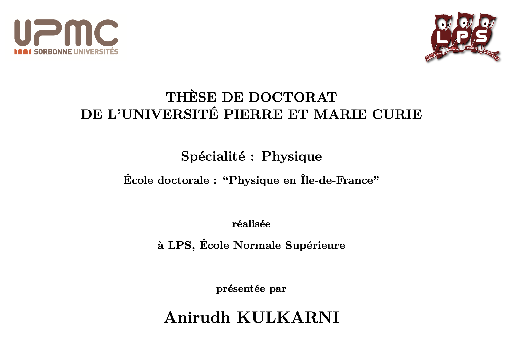
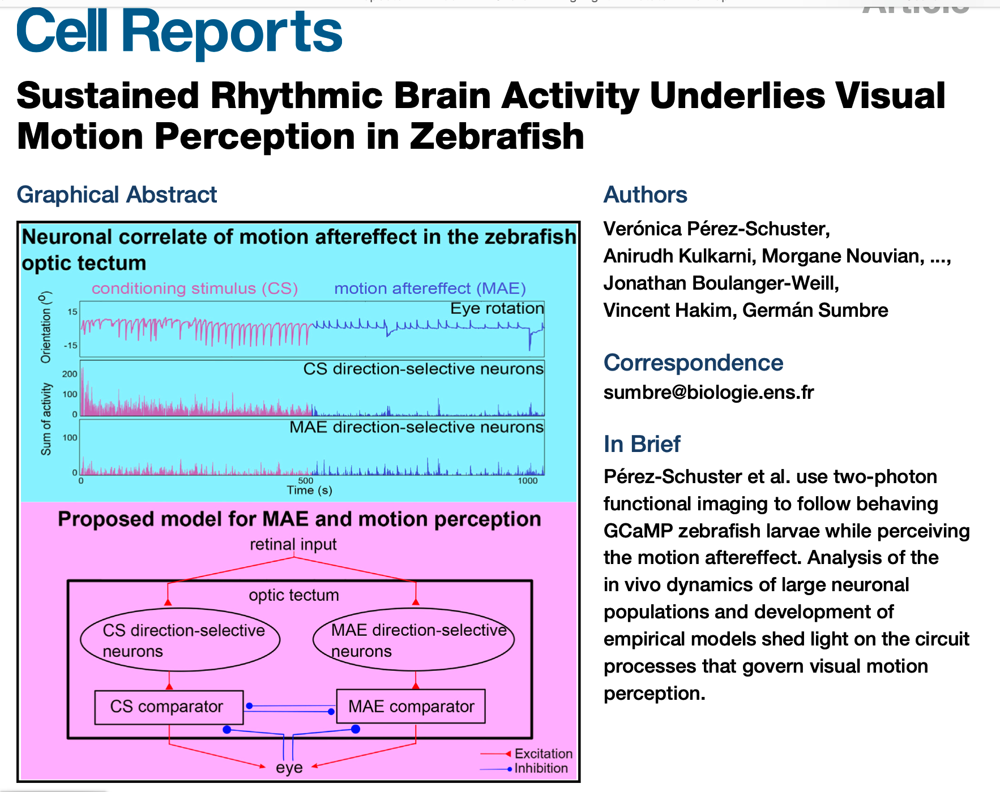
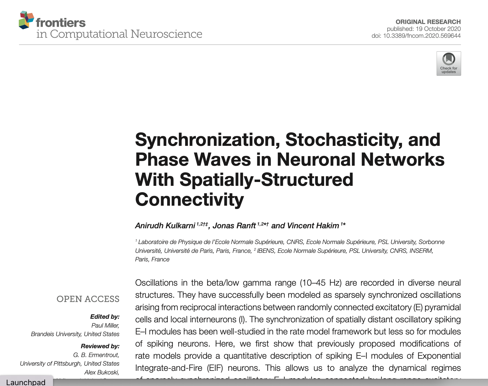
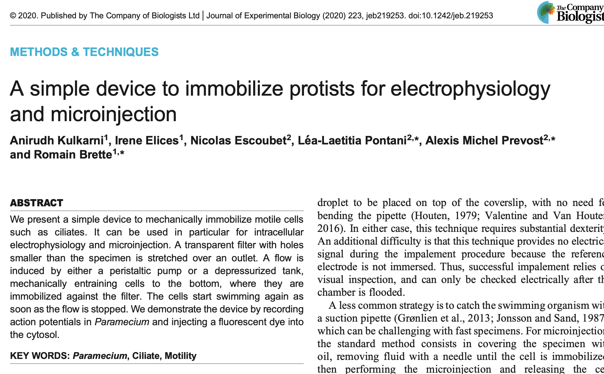
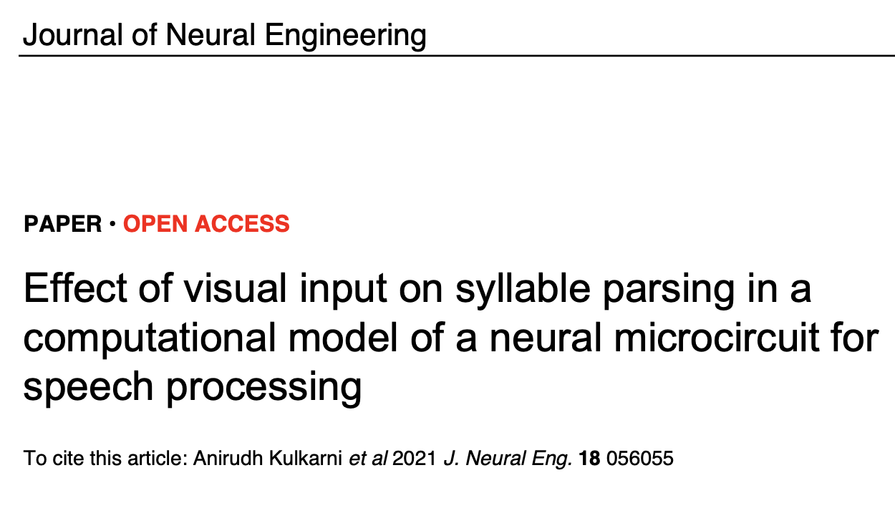
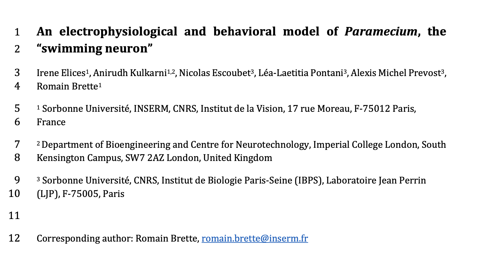

My research combined computational modelling and experiments to understand how the brain processes information.
Explore accessible summaries of my publications below, or click through to read the full articles.
PhD Thesis: Dynamics of Neuronal Networks
Understanding how thousands of brain cells coordinate their activity is key to explaining how the brain turns raw sensory signals into perception, attention, and behaviour. My PhD thesis explored how networks of brain cells work together across two areas:
- Experimental Neuroscience: Recording live brain activity to understand perception. This part of the thesis studied the Motion After Effect illusion in zebrafish larvae.
- Computational Neuroscience: Building mathematical and computer models of neural networks. This part investigated how brain waves in different regions of the brain communicate and synchronise with each other.

Motion After Effect in Zebrafish Larvae
If you stare at a waterfall or a moving object for a minute and then look at something still, the stationary scene appears to drift in the opposite direction. This illusion, first described by Aristotle, is called the Motion After Effect. Visual illusions offer a unique window into the brain because they show where perception diverges from the physical world, revealing the neural rules the brain uses to adapt to changing scenes.
Zebrafish larvae experience this same illusion, which can be tracked through their eye movements. By recording activity directly from their neurons, our study showed that the illusion came from motion adaptation in a brain region called the optic tectum.
Two groups of neurons compete with each other: one detects motion to the right, and the other detects motion to the left. When the fish watched motion to the right for a long time, the "right-motion" neurons tired out and became less active. When the motion stopped, the "left-motion" neurons temporarily had higher baseline activity, tricking the brain into seeing movement to the left. Our paper paired these recordings with a simple mathematical model that reproduced the effect.

Synchronisation of Brain Waves
When we measure human brain activity using EEG, we see rhythmic electrical signals known as brain waves. Coordinated brain waves help distant brain regions share information during attention, memory, and sleep, whereas abnormal synchronisation is linked to neurological conditions such as epilepsy and Parkinson's disease.
Using mathematical rate models and computer simulations of up to three million spiking neurons, this study explored how brain waves in different areas coordinate with each other. We showed that coupled brain regions could either oscillate in lockstep or produce waves that appeared to travel from one region to another, depending on background noise and how strongly the regions connected.

Trapping Paramecia for Neural Recordings
Paramecium is a single-celled organism that swims in water and fires electrical action potentials much like a neuron. Whenever it bumps into an obstacle and turns around, it emits an electrical spike, making it a fascinating "swimming neuron". Studying a single cell that both fires spikes and moves on its own lets us see how electrical signals directly drive behaviour without the complexity of a multi-million-neuron brain.
However, paramecia swam too fast to record from easily, and clamping them mechanically damaged the cell or stopped their movement. To solve this, we developed a simple microfluidic device that pumped water in and out at matching speeds, gently holding the cell in place so we could record its electrical activity and image its internal calcium signals while its cilia continued to beat naturally.

How Vision Helps the Brain Understand Speech
Seeing a speaker's face and moving lips makes it much easier to understand speech in a noisy room, especially for people with hearing loss. Understanding how the brain combines lip movements with sound can help improve hearing aids, cochlear implants, and audio-visual speech-recognition systems.
Remarkably, visual information reaches even the earliest hearing centres of the brain (the primary auditory cortex), where slow brain rhythms (theta waves) mark the boundaries between spoken syllables (for example, "How + is + ev + ery + one?").
By extending a computational model of the auditory cortex to include visual input from lip movements, our study showed that visual signals significantly improved syllable tracking when lip movements preceded the sound by 0 to 150 milliseconds, matching the natural timing of human speech.

Biophysical Model of a Paramecium
Many of the ion channels that generate electrical signals in human neurons first evolved in single-celled organisms. Understanding how these channels control movement in a single cell provides a complete, start-to-finish picture of how electrical activity translates into physical action.
Building on our immobilisation device, we developed a quantitative biophysical model of the action potential in Paramecium. By immobilising swimming cells, recording their voltage responses to electrical currents, and fitting the experimental data to a Hodgkin-Huxley-style model, we captured how calcium and potassium currents interacted with ciliary motion to guide how the organism swam and turned.
